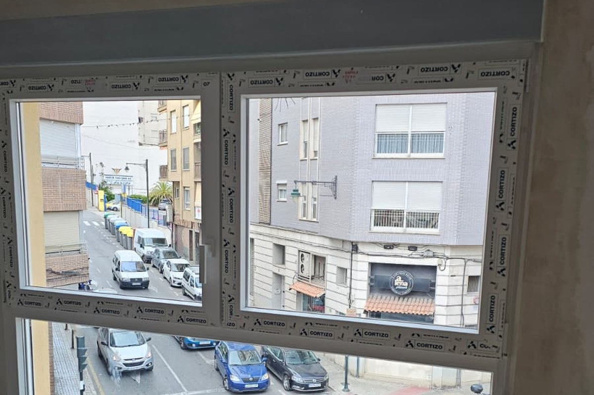

Ventanas de PVC y Aluminio RPT en Cocentaina
Ventanas Bañuls es el taller fabricante e instalador más cercano a Cocentaina (a solo 3 km por la N-340 / A-7). Instalamos sistemas de PVC Cortizo y aluminio RPT con herrajes Roto Frank, montaje limpio en 1 día y medición técnica gratuita a domicilio.
Tanto si resides en el casco histórico de Cocentaina como en urbanizaciones como Gormaig o Els Algars, sustituimos tus antiguas ventanas con perfilería de máxima eficiencia energética para reducir hasta un 45% en tu factura de calefacción y aire acondicionado.

¿Por qué elegir Bañuls para tus ventanas en Cocentaina?
Cercanía real, respuesta inmediata y acabados de carpintería premium:
A 5 minutos de tu casa
Al tener nuestro taller de fabricación y almacén central en Carrer Murillo 41 (Alcoy), nos desplazamos a Cocentaina en apenas 5 minutos para medir y ajustar presupuestos el mismo día.
Pisos, Casco Antiguo y Chalets
Adaptamos el perfil al estilo arquitectónico: acabados foliados madera o blanco para el núcleo urbano de Cocentaina, y grandes correderas elevables minimalistas para chalets en Gormaig.
Deducción IRPF hasta el 40%
Entregamos toda la memoria técnica oficial y certificados CE de transmitancia térmica para que te desgraves la inversión en la declaración de la renta de la Comunidad Valenciana.
Sistemas de Alta Eficiencia para Cocentaina
Fabricación a medida con sellos oficiales de calidad Cortizo, Roto y Strugal:
Ventanas de PVC Cortizo (5 y 6 cámaras)
La solución definitiva contra las bajas temperaturas del invierno en el Comtat. Cero condensaciones, herraje perimetral oscilobatiente y doble junta de estanqueidad.

Aluminio con Rotura de Puente Térmico (RPT)
Perfiles esbeltos y robustos que permiten un mayor paso de luz natural. Poliamidas aislantes que frenan la transmisión térmica y acabados lacados ultra resistentes.
Instalaciones Profesionales en la Comarca del Comtat
Observa la precisión de cierre, la suavidad del herraje oscilobatiente y el acabado estanco de nuestras instalaciones.
Instalación Limpia en 24 Horas
Retiramos tus antiguas ventanas y montamos las nuevas sin necesidad de obras destructivas ni suciedad acumulada. En la mayoría de viviendas de Cocentaina el cambio se completa en una sola jornada de trabajo.


Preguntas Frecuentes sobre Ventanas en Cocentaina
¿Cobráis desplazamiento por venir a medir a Cocentaina?
No, en absoluto. Al estar nuestro taller en Carrer Murillo 41 en Alcoy, a tan solo 3 kilómetros, el desplazamiento y el estudio de medidas en Cocentaina es 100% gratuito y sin compromiso.
¿Cuánto se tarda en fabricar e instalar las ventanas?
El plazo habitual de fabricación a medida oscila entre 2 y 3 semanas. Una vez listas, la instalación en una vivienda completa se realiza normalmente en 1 único día.
¿Me puedo acoger a la deducción del IRPF en Cocentaina?
Sí. Al pertenecer a la Comunidad Valenciana, los propietarios que renueven sus ventanas reduciendo la demanda energética pueden deducir entre un 20% y un 40% en su declaración de la renta. Te facilitamos toda la documentación técnica requerida.
Pide tu Presupuesto sin Compromiso en Cocentaina
Contacta con el equipo de Ventanas Bañuls y concertamos una visita para medir tus ventanas: